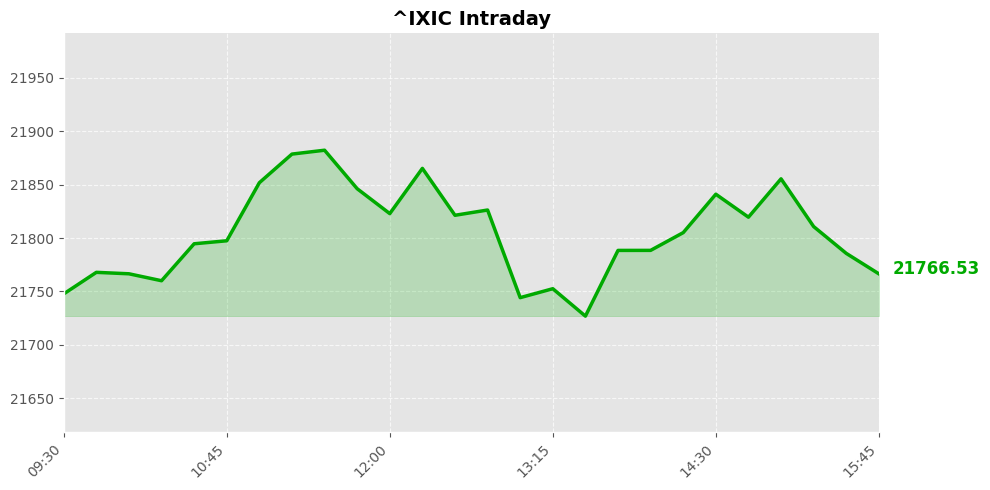
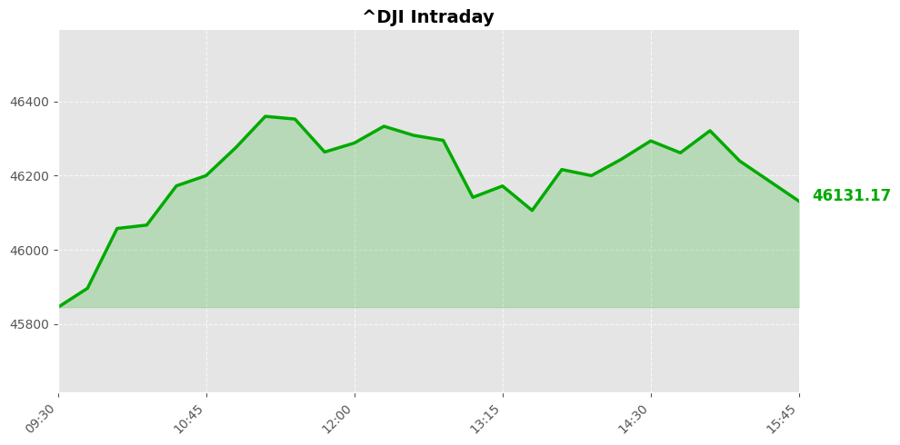
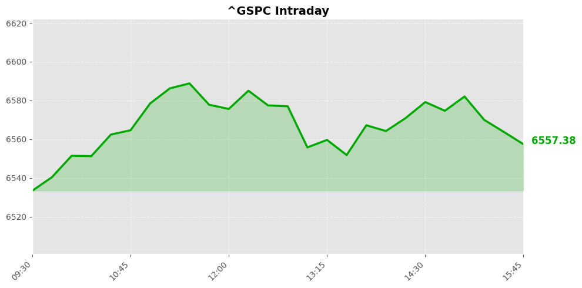

Daily Market Briefing
Market Overview



Market Analysis
The recent trading session reflects a modest but broad-based decline across the major U.S. equity indices. The NASDAQ Composite, often considered a barometer for technology and growth stocks, led the downturn with a decline of 0.84%, closing at 21,761.89. This sharper pullback suggests some profit-taking or reassessment within the tech sector, possibly driven by concerns over valuation adjustments or macroeconomic uncertainties.
Meanwhile, the Dow Jones Industrial Average experienced a relatively mild decline of 0.18%, ending at 46,124.06. The Dow’s resilience indicates that more established, dividend-paying stocks continue to attract investor interest amid cautious market sentiment. The S&P 500, a broader market indicator, declined by 0.37%, reflecting a cautious tone among investors as they digest recent economic data and geopolitical developments.
Overall, the market sentiment appears cautiously bearish, with investors likely weighing ongoing macroeconomic challenges such as inflation pressures, monetary policy outlooks, and geopolitical tensions. The declines, although modest, suggest a degree of risk aversion and profit-taking after recent gains, with traders possibly awaiting clearer signals on economic recovery trajectories or corporate earnings reports.
In summary, the market shows signs of consolidation rather than a sharp correction, with investors maintaining a cautious stance amidst a backdrop of macroeconomic complexity. Continued monitoring of economic indicators, policy developments, and earnings data will be crucial in determining whether this subdued trend persists or if a more sustained directional move emerges.
Today's Headlines
News Analysis
Market Focus Points Today
-
Geopolitical Tensions and Military Movements in the Middle East:
Ongoing military operations and diplomatic negotiations between the US and Iran continue to dominate market sentiment. Reports of US troop movements, Iran’s statements on transit rights through the Strait of Hormuz, and the possibility of a pause in hostilities are key developments. These factors contribute to heightened geopolitical risk, especially in energy markets and regional stability. -
Energy Market Uncertainty:
Iran’s potential energy-related gift to the US and the prolonged closure of the Strait of Hormuz forecast persistent disruptions in oil supply routes. Traders are increasingly cautious, with prediction markets indicating that normal tanker traffic may not resume for months, which could sustain elevated oil prices and volatility. -
U.S. Domestic Political Climate and Consumer Sentiment:
The low approval ratings for President Trump, amid rising fuel prices and geopolitical tensions, reflect underlying political fragility. Domestic policy uncertainty and the public’s perception of leadership effectiveness could influence broader market stability. -
Retirement Investment Trends:
The prominence of target-date funds in retirement portfolios (holding approximately $4.8 trillion) signals ongoing shifts toward diversified, professionally managed investment options. Investors are advised to scrutinize underlying fund holdings and risk profiles, especially in volatile times. -
Corporate Earnings and Sector Highlights:
Companies like Home Depot and Corning are making strategic moves, signaling resilience or sector-specific strength. These corporate developments, along with the broader macroeconomic backdrop, influence investor confidence and sector rotations.
Potential Market Impact Factors
-
Energy Prices and Oil Supply Disruptions:
Persistent uncertainties regarding the Strait of Hormuz and Iran’s energy policies could keep oil prices elevated, impacting inflation expectations and consumer costs. This, in turn, influences the Federal Reserve’s monetary policy outlook. -
Geopolitical Risks and Military Escalation:
The deployment of additional US troops and ongoing diplomatic negotiations could lead to sharp market swings, especially in defense stocks, energy, and emerging markets sensitive to Middle Eastern stability. -
Domestic Political Environment:
Low presidential approval and rising domestic dissatisfaction amid geopolitical tensions could increase volatility and influence investor risk appetite, possibly leading to safe-haven asset flows. -
Interest Rate and Monetary Policy Outlook:
The combination of geopolitical tensions, inflationary pressures from higher energy costs, and domestic political factors will likely keep markets attentive to Federal Reserve signals regarding interest rate adjustments.
Industry Trends Worth Noting
-
Energy Sector:
Elevated geopolitical risks are likely to sustain energy sector volatility, with potential upside for oil and gas companies if supply disruptions persist. -
Defense and Security Industries:
Increased military activity and US troop deployments suggest a potential uptick in defense sector revenues, contingent on political developments. -
Consumer and Retail:
Rising fuel prices and geopolitical uncertainties may dampen consumer spending, impacting retail and home improvement sectors, though some companies may benefit from resilient demand. -
Financial Advisory and Retirement Services:
The growth of target-date funds underscores a shift toward passive, diversified retirement investment strategies. Financial institutions should emphasize risk management and transparency, especially amid volatile geopolitical climates.
In conclusion, today’s market is characterized by heightened geopolitical risks, energy market uncertainties, and evolving domestic political dynamics. Investors should adopt a cautious stance, diversify portfolios, and remain vigilant to developments in the Middle East and U.S. policy signals.
Economic Indicators
Inflation Indicators
Employment Indicators
Consumer Indicators
Community Hot Stocks
| Rank | Symbol | Mentions | Source |
|---|---|---|---|
| 1 | MSFT | 112 | |
| 2 | PUMP | 61 | |
| 3 | MOS | 57 | |
| 4 | HIT | 44 | |
| 5 | CF | 43 | |
| 6 | FACT | 39 | |
| 7 | LUCK | 32 | |
| 8 | CARE | 32 | |
| 9 | NET | 31 | |
| 10 | BEAT | 31 | |
| 11 | TACO | 31 | |
| 12 | META | 31 | |
| 13 | BULL | 30 | |
| 14 | STEP | 29 | |
| 15 | VS | 29 | |
| 16 | PLUS | 25 | |
| 17 | SAFE | 24 | |
| 18 | ADD | 23 | |
| 19 | TURN | 22 | |
| 20 | MIND | 22 |
Market Outlook
The recent market performance indicates a cautious tone among investors, with major indices closing lower—NASDAQ down by approximately 0.84%, the Dow by 0.18%, and the S&P 500 by 0.37%. This decline suggests a risk-off sentiment, likely driven by geopolitical developments and macroeconomic uncertainties.
Key news factors include ongoing diplomatic negotiations involving Iran, with statements suggesting a potentially easing of tensions. Iran's indication that "non-hostile" ships can transit the Strait of Hormuz and positive remarks from Trump about energy-related gestures hint at a possible de-escalation in geopolitical risks. Such developments could provide some short-term relief and may stabilize or slightly boost market sentiment if confirmed.
However, the market remains sensitive to geopolitical risks, especially given Iran's strategic importance and the potential for unpredictable developments. Additionally, the focus on large-scale retirement funds and corporate earnings highlights ongoing investor concerns about long-term economic stability and corporate health.
In the short term, markets may experience continued volatility, with possible brief rallies on positive diplomatic signals, but downside risks remain due to macroeconomic pressures and geopolitical uncertainty. Investors should watch for clarity on Iran-U.S. negotiations and any signs of escalation or de-escalation.
Key points for investors: - Maintain a cautious stance, as market volatility may persist. - Keep an eye on geopolitical developments, especially related to Iran and the Middle East. - Consider diversification to mitigate risks associated with macroeconomic and geopolitical shocks. - Monitor corporate earnings and macroeconomic data for clues on economic resilience.
Overall, a cautious, risk-aware approach is advisable, with potential for short-term stabilization if geopolitical tensions ease.
Follow Us

Scan to follow StockGate
For more US stock market insights